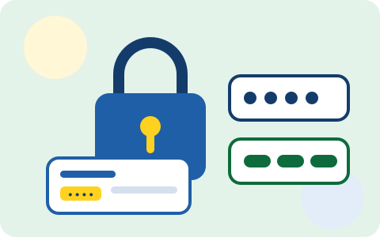

Пароль — это ключ от вашего банка. Если ключ угадают, деньги могут уйти без вашего ведома.

Главное правило
Код из SMS — это ваш ключ. Никому его не называйте.
Суть консультации
Вход в банк через интернет защищают два «замка»: пароль, который вы придумываете сами, и код из SMS, который банк присылает при входе. Эта консультация объясняет, как сделать первый замок крепким и почему второй нельзя никому отдавать — даже «сотруднику банка».
Дальше — по коду доступа
Полная консультация включает: как выбрать пароль, который трудно угадать, приём для запоминания, правила для кода из SMS и действия, если пароль кто-то узнал.
Какой пароль выбрать
Пароль должен быть длинным и не связанным с вами. Даты рождения, имена детей и номера телефонов мошенники пробуют первыми.
Шаг 1. Придумайте фразу
«Летом я собрал 7 кг грибов»
→
Шаг 2. Возьмите первые буквы
ЛяС7кг!
Такой пароль легко вспомнить, а угадать его почти невозможно.
Слабый пароль
123456 — самый распространённый в мире, взламывается мгновенно.
Дата рождения — её легко узнать из интернета или при разговоре.
Имя внука — мошенники собирают такие сведения заранее.
Один пароль везде — взломают один сайт, получат доступ ко всем.
Надёжный пароль
Длинный — от 12 знаков: чем длиннее, тем труднее угадать.
Разный на каждом сайте — банк, Госуслуги, почта: везде свой.
Не связан с вами — никакие даты и имена.
Хранится в записной книжке — в надёжном месте дома, не на мониторе.
Приём для запоминания
Возьмите любую фразу, которая легко запоминается, и превратите её в пароль. Например, фраза «Летом я собираю 7 корзин грибов» превращается в пароль ЛяС7кг! — первые буквы слов, цифра и знак. Такой пароль и крепкий, и запоминается легко.
Совет: запишите пароли в бумажную записную книжку и храните там, где их найдёт только вы. Это надёжнее, чем хранить в заметках телефона.
Код из SMS — второй замок
Когда вы входите в банк, банк присылает на телефон код из SMS. Это защита: даже если пароль кто-то узнает, без кода с вашего телефона он в банк не попадёт. Поэтому код из SMS — это как ключ от квартиры: его нельзя никому давать, даже на минуту.
Пароль — первый замок, код из SMS — второй. Отдав кому-то код, вы отдаёте ключ.
Важно: если вам звонят и просят назвать код из SMS «для отмены операции» — это мошенники. Код нужен только вам для входа в банк. Положите трубку и перезвоните в банк сами.
Что делать, если пароль кто-то узнал
Смените пароль в настройках банка — сразу, не откладывая.
Смените этот же пароль на всех сайтах, где он использовался.
Проверьте последние операции в банке. Если есть незнакомые списания — позвоните в банк по номеру с карты.
Частые вопросы
Сложный пароль трудно запомнить. Как быть?
Используйте приём с фразой (см. выше) — он даёт и надёжность, и простоту. А ещё запишите пароли в бумажную книжку.
Банк сам предложил сохранить пароль в браузере (программе, через которую вы открываете сайты). Это безопасно?
Если компьютером дома пользуетесь только вы — это можно. Но надёжнее бумажная записная книжка: она не подключена к интернету, и взломать её нельзя.
Пришло SMS с кодом, но я никуда не входил. Опасно ли это?
Кто-то пытается войти в ваш банк. Позвоните в банк по номеру с карты и сообщите об этом. Код никому не называйте.
Проверьте себя
Какой пароль надёжнее?
Звонят «из банка»: «Назовите код из SMS, мы отменяем подозрительную операцию». Что делать?
Пришло SMS с кодом, хотя вы никуда не входили. Что делать?